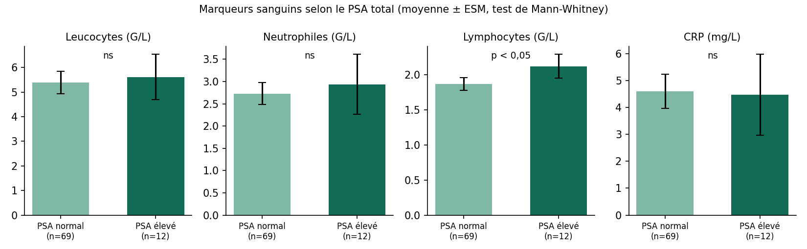

Projet 05 — Inflammation et dysfonctionnements de la prostate au CHUD-OP
Mémoire de fin de formation, licence professionnelle en biotechnologie médicale (ENSBBA–UNSTIM), soutenu le 23 juillet 2024. Étude réelle, contrairement aux projets 01 à 04 qui utilisent des données synthétiques.
Contexte
L'hypertrophie bénigne, la prostatite et le cancer de la prostate touchent surtout les hommes âgés. Le PSA est le marqueur de référence, mais il n'est pas spécifique du cancer : il augmente aussi en cas d'inflammation. Des essais (MTOPS, REDUCE) ont suggéré un rôle de l'inflammation dans ces maladies.
Question et objectifs
Comprendre l'implication de l'inflammation dans les dysfonctionnements de la prostate. Objectifs : mesurer PSA total, CRP et NFS ; comparer ces marqueurs entre patients à PSA normal et élevé.
Méthodes et justification
- Type d'étude : rétrospective (1er janv. 2023 – 20 mars 2024, 61 dossiers) et prospective (25 mars – 22 juin 2024, 20 patients de dialyse consentants), laboratoire du CHUD-OP.
- Population : 81 hommes de 40 ans et plus. Exclus : hommes déjà traités, demandes volontaires de PSA, absence de symptômes.
- Dosages : NFS sur automate Sysmex XN-1500 (tube EDTA) ; CRP par spectrophotométrie ; PSA total sur automate VIDAS (tube à gel, sérum).
- Pourquoi ces marqueurs : les neutrophiles et la CRP reflètent une inflammation aiguë ; les lymphocytes peuvent refléter une inflammation chronique.
- Statistiques : moyenne ± ESM, test de Mann-Whitney, seuil de 5 %, graphiques GraphPad. Confidentialité respectée, consentement pour le volet prospectif.
Résultats
69 patients (85 %) ont un PSA normal et 12 (15 %) un PSA anormal.
| Marqueur | PSA normal | PSA élevé | Différence |
|---|---|---|---|
| Leucocytes (G/L) | 5,39 ± 0,46 | 5,61 ± 0,92 | non significative |
| Neutrophiles (G/L) | 2,73 ± 0,25 | 2,94 ± 0,67 | non significative |
| Lymphocytes (G/L) | 1,87 ± 0,09 | 2,12 ± 0,17 | p < 0,05 |
| CRP (mg/L) | 4,61 ± 0,63 | 4,48 ± 1,50 | non significative |

Graphique redessiné à partir des valeurs du mémoire ; les effectifs par groupe sont ceux de la répartition du PSA.
Discussion
Leucocytes, neutrophiles et CRP ne diffèrent pas : pas de signe d'inflammation aiguë. Les lymphocytes sont plus élevés quand le PSA est élevé, ce qui est compatible avec une inflammation chronique de bas grade, en accord avec la littérature citée (inflammation chronique et PSA). La fréquence de PSA élevé (15 %) se situe dans la fourchette publiée (10 à 20 %).
Limites
- Seulement 12 patients à PSA élevé : faible puissance, intervalles larges.
- Les patients du volet prospectif sont en dialyse, ce qui peut modifier les marqueurs inflammatoires.
- Fusion de données rétrospectives et prospectives ; pas d'ajustement sur l'âge ni d'analyse de corrélation.
- Une différence de lymphocytes d'environ 0,25 G/L est modeste. Il s'agit d'une association, pas d'une preuve de causalité.
- Pas de confirmation histologique ni de diagnostic précis (HBP, prostatite, cancer).
Conclusion
Une inflammation chronique est possiblement associée à un PSA élevé, sans inflammation aiguë détectable. Un échantillon plus large, mieux apparié, serait nécessaire pour confirmer.
Références principales
- Nickel JC et al. (2008). Prostate inflammation and lower urinary tract symptoms, essai REDUCE. Eur Urol.
- Roehrborn CG et al. (2005). Inflammation et progression de l'HBP, étude MTOPS.
- Gurel B et al. (2014). Inflammation chronique et cancer de la prostate de haut grade. Cancer Epidemiol Biomarkers Prev.